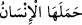
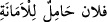

(Onlar da O’nu severler)” (el-Mâide, 5/54) buyurmuştur.
İnsan cismânî-zulmânî kabuktan geçince rûhânî-nûrânî öze/lübbe ulaşır. Sonra bu
nûrânî özün de bir kabuk olduğunu bilir. Çünkü Hz. Peygamber (s.a.): “Allâh’ın nur ve
zulmetten yetmiş bin perdesi vardır.”[329] buyurmuştur. Böylece insan rûhânî kabuğu da
geçer, Hakk’ın sevgilisi ve Hakk’ı seven olma demek olan onun özüne ulaşır. Böylece o
nefsini tanımış olur. Nefsini tanıyınca da şirk ile değil, tevhîd ile Rabbi’ni de tanımış
olur. Allah Teâlâ’tan başka her şeyin tamamen câhili olur.
Yine cehûl/çok câhil, âlim demektir. Çünkü ma‘rifet bâbında ilmin sonu bilmediğini
îtiraf etmektir. İdrâki idrâk etmekten âciz olmak idraktir.
Molla Câmî şöyle demiştir:
İnsan dışında kimse kabul etmedi o emâneti,
Çünkü insan çok zâlim, çok câhildir
Onun zulmü, kendi varlığını
Daimî bakâ için fanî yapmasıdır.
Cehâleti ise, Hak’tan gayrı olan her şeyin
Sûretini gönül levhasından silmesidir.
Ne güzel zulüm ki aynı adâlet;
Ne hoş cehâlet ki ma‘rifetin kendisi.
Ey gönlünü dünyâ ilgilerinden arındırmayan kişi!
Mahlûkata dair bilgiden dem vurma.
Çünkü Hakk’ın katında
Cehâlet ilim, ilim ise câhilliktir.
İnsanda bu çok zâlimlik ve çok câhillik kuvveti olmasaydı emâneti yüklenmezdi. Bu
bakımdan emâneti yüklenmenin illet ve sebebini bu iki kuvvete bağlamak doğru olur.
el-Kâmûs sâhibinin de kendilerine tâbi olduğu bâzı müfessirler şöyle demiştir: “Çok
zâlim ve çok câhil olma vasfı, emâneti yüklenip kabul edene değil, ancak emânete
hıyânet eden ve hakkını eksik yapanlara lâyıktır. Buna göre “
” demek,
emânete hıyânet etti, demek olur. Bu durumda âyetteki “insan”dan murad, kâfir ve
münâfıktır. “
” demek, zimmetinden gitmesi ve uhdesinden çıkması için
emâneti arkadaşına vermez mânâsınadır. Böylece emânet sanki emânet edilen kimsenin
sırtına binmiş gibi kabul edilmektedir. Öyleyse emâneti yüklenmek, emânete hıyânetten
ve onu zayi etmekten kinâyedir.
Buna göre âyetin mânâsı da şöyle olur: Biz tâati, bu büyük cisimlere teklif ettik de
onlar cansız varlıklardan sahih ve mümkün olacak bir boyun eğme ile Allâh’ın emrine
boyun eğdiler ve kendilerine lâyık bir itâatle Allâh’a itâat ettiler. Öyle ki onlar O’nun
muhtelif durumlarda ve türlü şekillerde var etme, yaratma ve şekil verme irâdesinden
ve dilemesinden imtinâ etmediler. Nitekim bir âyette göğün ve yerin “isteyerek geldik”